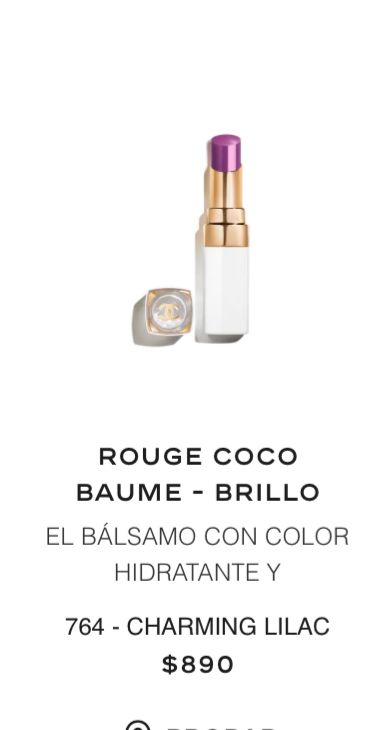

Chanel
La historia de Chanel en el maquillaje comenzó en 1924, cuando Gabrielle Chanel lanzó su primera barra de labios con un color revolucionario. El rojo se convirtió en la firma de barras de labios de la marca, y la Maison Chanel se convirtió en la marca de barras de labios por excelencia.

Regresar